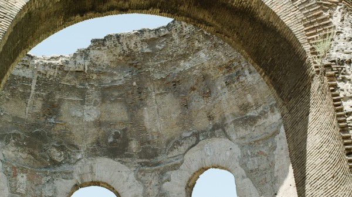

-
Personal Records: Heinz Emigholz on Perret in France and Algeria
by Aaron Cutler February 15, 2013
The modernist architect Auguste Perret was born in 1874 and died in 1954. He built houses, studios, churches, and government buildings both in France and in the French colony of Algeria, then died eight months before Algeria declared its war for independence. The German filmmaker Heinz Emigholz’s new film, Perret in France and Algeria (2012), shot on trips to the two countries between March and July of 2011, shows how both sets of buildings are presently being used. In France, a largely Christian country, Perret’s churches and chapels have retained immaculate auras, placing them at a distance from everyday life; in Algeria, which became a Muslim country after winning its independence in 1962, Perret’s Cathedrale d’Oran has been converted into a public library. The air of the French concert hall Salle Cortot, maintaining a division between precisely ordered seats and the performance stage, differs from the availability of Perret’s Algerian Yacht-Club, a crumbling structure turned into a docking space for fishermen’s boats. The film makes it clear that many of Perret’s French buildings are now carefully preserved, oft-deserted performance halls, museums, and official historic sites, while many of his Algerian buildings are in constant public use.
The duality in Perret in France and Algeria—screening in New York February 15 and 16 as the opening film of the Museum of Modern Art series Documentary Fortnight—is communicated through new filmed images of the buildings and the sounds of their surroundings, without voiceover, as befits the usual style of Emigholz. He was born near Bremen in 1948, and began rendering the world artistically as a draftsman before turning to filmmaking. His early films such as Arrowplane (1974) and the Schenec-Tady trilogy (1972-1975) presented, to the tune of scores written before filming, landscapes rendered through sequences of thousands of 16mm photographs. After making a narrative, actor-driven film called The Holy Bunch (1990), he shifted his practice from filming actors in space to focusing exclusively on filming spaces themselves in a series of documentary films.
Over the past 20 years, Emigholz has made more than 80 films in the ongoing nonfiction series Photography and beyond, which uses the tools of filmmaking to present works by visual artists from other mediums, including painting, drawing, sculpture, and interior design. Perret in France and Algeria, which the filmmaker intends as one of the series’ closing films, belongs to a subcategory called Architecture as Autobiography, each of whose entries takes as its starting point the life’s work of a modernist architect or civil engineer. Each film offers a succession of individual sequences containing new images of the person’s buildings in the structures’ chronological order of completion, suggesting both how the artist’s style developed over time as well as how time has impacted his works.
A typical Architecture as Autobiography sequence begins with a title card stating an individual building’s name (e.g., Hôpital Sétif), date of completion (1934), location (Sétif, Algeria), and the date of Emigholz’s filming it (June 22, 2011). The sequence then shows the building through a series of fixed shots of individual parts of it, often taken at slightly skewed angles in keeping with how the human eye frequently looks. For instance, Sullivan’s Banks (2000), a 1995-filmed cataloguing of banks built between 1906 and 1920 by the American architect Louis Sullivan, first presents the exterior of the National Farmer’s Bank in Owatonna, Minnesota as seen from in front of a tree; the film then registers the bank from a series of vantage points along the car-filled streets outside it, glimpsing the neighboring dance school and dry cleaning shop while moving closer to the building, until an old metal sign reading “Office Entrance” appears, transitioning to an exploration of the bank’s interiors.
A similar urge to see informs a trip through Auguste Perret’s Parisian Immeuble d’Habitation de Maurice Lange, as the camera looks first up, then down during a stairwell ascent, finally arriving at a door, and then a trio of moving trees outside. The shots in almost any Architecture as Autobiography sequence link together to form small, self-contained narratives of curiosity, exploration, and discovery, with both eyes and ears taking their fill of a place. Throughout the shots the soundtracks flow richly with ambient noise from both the buildings and their surroundings, whether the dying echoes of human footfalls or the gathering whoosh of wind as it rustles through leaves.
The sound helps the viewer to imagine a greater world of which any one edifice is merely a part. “There is no point in trying to separate a building from its surrounding environment,” Emigholz says in the first scene of his architecture film Schindler’s Houses (2007), an exploration of Los Angeles homes built by the Austrian émigré Rudolph Schindler, with views of the newer curving roads and hilltop houses around them. In that Architecture as Autobiography film, as well as in others, seeing buildings within a greater contemporary urban context suggests how they continue to be relevant to it. In Perret in France and Algeria, regardless of whether the streets surrounding a Perret building are empty, as in Paris, or bustling, as they are throughout Algeria, one is always aware of people continuing to interact with a building regardless of its age, animating it and reinventing its value for the present moment.
These contemporary people include Emigholz, who has made the act of recording other peoples’ life work into his own. As his camera studies interior curving pathways that simultaneously connect and offset the clean, elegant lines of a vertical foundation, it becomes clear that his prized architects’ buildings were made to be inhabited as well as looked at. Their great beauty, his films suggest, holds practical value: it makes inhabiting them a pleasure.
How did you arrive at Perret in France and Algeria?
Between 1986 and 1990 I produced and directed a feature film called The Holy Bunch. It dealt with a group of artists, one of them dying, as well as with an elaborate set of architectures and complicated spaces, designed on a set and filmed in reality at places like at the Cologne Cathedral and La Sagrada Famila in Barcelona. I like to depict complicated, multi-layered spaces. I went broke with The Holy Bunch because I produced it myself, and was sitting with a lot of debt. So I decided to drop the actors and continue with what I liked most. I continued filming the spaces without them.
I made a list of architects and civil engineers whose work I admired: Louis Sullivan (1856-1924), Robert Maillart (1872-1940), Rudolph Schindler (1887-1953), Bruce Goff (1904-1982), Adolf Loos (1870-1933), Pier Luigi Nervi (1891-1979), and Auguste Perret, among others. In 1992 I started preparing one film, a documentary with voice-over, about these architects, their concepts of space, and my thoughts on it all. I filmed and filmed without knowing how I would edit the material. Then, around 1997, I decided to drop the overview approach.
The reason for this was that I thought cinema had lost its purpose as something that could explain the world on every level, as in a Gesamtkunstwerk [“total work of art”]. The Internet arose to provide a lot of information, so now I did not have to infest my film with that information any longer. I could spare the time and present spaces in an act of cinematography instead. Not to dramatize the material, not to put music or anything on top of it. Just to film and represent the spaces in a well-equipped screening room.
It was clear that I had too much material for one film with the works of these guys. I broke the project into several films and made a chronological order for each, a kind of catalogue of the buildings. I would edit the buildings in the order they were built so that we could see how each architect’s work developed over time. I would film the spaces, and in between the images of buildings I would include title cards with basic information: the name of the building, its location, the year it was built, and when I filmed it. My idea seemed so simple that I thought there would already exist hundreds of similar films, but I was shocked to discover that there were none. Our current historical moment’s belief that everything is available to you with the click of a button in a search machine is so utterly false. You have to make long journeys to record these spaces, and nobody had done it before.
The first three short films in the series Photography and beyond premiered at the Berlin International Film Festival in 2001. Some people said, “This is only for architects,” but I had another vision. We all have to live in some kind of building, so everybody has to think about or is confronted with what architecture is or could be, even if one doesn’t want to deal with it. I initially filmed in 35mm because of its high resolution. It was the best stock for documenting architecture. When you work in 16mm you cheat the spaces, the volume of negative space does not show – a high resolution is essential for showing it. Now we work with the RED digital camera and its high resolution, which is a relief, because we couldn’t make certain films on 35mm analogue film stock. On this recent trip we did around the world for The Airstrip, for instance, it would have been impossible to carry that equipment around. But regardless of digital versus analogue, the aim was always, from the beginning, to use the cinema space to represent architecture. This is subversive, because cinema is usually built to show something that takes place within a space, but cinema can represent spaces themselves in the best way that you can think of.
Tempio di Minerva Medica, Rome, from Parabeton—Pier Luigi Nervi and Roman Concrete (2012)
Now there are about eighty films in the series, including nine feature-length works. Perret in France and Algeria is the second-to-last film of a final group of films I call Decampment of Modernism. The first one, Parabeton – Pier Luigi Nervi and Roman Concrete (2012), premiered at Berlin last year and has not yet been released in the United States. The final one, The Airstrip, will be finished this June. Like Parabeton, which deals with both modern and ancient constructions by placing the architectures of Nervi’s modernist buildings in relation to ancient Roman structures the Perret film contains a dichotomy. The Airstrip is a compilation film, and it will sum up my endeavor with conclusions on a worldwide level.
How do you see the paths of Perret’s French and Algerian buildings diverging after Algerian independence?
I knew that Perret had built in Algeria, but I had never been there, so the trip to Algeria and the difficulties of filming there became a story in itself. The buildings there were built under French rule, then Algeria became independent, and it was moving to see what had happened to the buildings there versus those in France and how history had divided their histories into two separate tracks. I like that duality in this film very much. He built one building there, and then maybe three in France and one in Algeria. But I didn’t push their succession dramaturgically—it’s just chronological. It’s not a rhythm I created, it is created by the works themselves.
I do not say, in either case, “This is good” or “This is bad.” First, as a documentary filmmaker, I go to these spaces to record them. I don’t re-arrange furniture; I do not add artificial light; I film everything like it is. Sometimes I’m asked why so few people appear onscreen, to which I say it’s because I don’t use actors. We filmed some small streets in Paris, which were often empty. What can you do? I don’t want to make people act out living somewhere. If they feel comfortable with being in the picture, I feel comfortable with it, but either they are there or they are not. And I must say I am quite happy that they are sometimes absent, because actors can block the view of the real thing. You don’t need somebody to represent you in the picture as an onlooker—you can imagine that you are there yourself.
Perret built some artists’ studios in Paris, including one for the sculptor Chana Orloff in 1929. The Nazis destroyed her studio during WWII, and she died in Israel in 1968. Her son turned her former studio space into a kind of museum for her sculptures, which it remains today. He let us in—it’s not open to the public, but we wanted to film the building. And I was suddenly interested in her sculptures. The result is a long sequence that doesn’t deal much with architecture, because it’s a relatively simple space, but with a full sculptural population. At the end of it appears her bust of Auguste Perret’s head. I love that sequence because, no, people are not technically living there, but in a way they are—the spirits of people who once lived.
Our most populated Paris scene will be in The Airstrip. Perret designed a monument for Gustave Eiffel, who built the Eiffel Tower, which is located at the Tower’s north corner. There are a lot of people in that sequence, standing in line. But it’s generally true that in Paris there are empty streets and in Algiers there are populated streets. In Algeria, when you see the Maison de l’Agriculture, you also see hundreds and hundreds of people walking outside it. And then you see something like the Yacht Club in Algiers. If a yacht club by Perret would still exist in the so-called West, it would be posh. In Algiers, the Yacht Club is now a run-down space for fishermen to use. I’m not moralistic about what happens—I just want to show it. But for me that run-down place is a much nicer yacht club than its posh counterpart in the West could ever be.
It seems that some cultures use up their architecture. East Germany used up the DDR, sometimes destroying old quarters and building new ones. We don’t live in a museum. Different societies deal differently with architectural heritage. It’s not up to me to say what the Algerians do with their buildings is wrong and what the French do is right, or the other way around. But we can read. When we depict what’s there, I think we can very well read what’s going on.
What happens to modern buildings in time? The originators, the first owners, leave them. New people move in, and the buildings change. Some become so-called trophy houses, or masterworks. Many buildings by Schindler, Maillart, and Goff were originally single custom-made houses, built cheaply, but to renovate or even simply maintain them now would be very expensive. Labor was cheap when they were built, but now it is expensive in certain countries. In the case of Robert Maillart, the scaffolding for the buildings was cheap. The buildings were elegant concrete structures, and the scaffoldings were masterworks in themselves. But now you can’t just go to Home Depot to fix a Schindler building. If you would try to redo them now, you couldn’t pay for it. A lot of the buildings I have depicted are already forgotten, with only one building per architect taken to be the essence of his work. People rarely take the whole arc of his work, but I want to show how it began and how it ended.
The way I see that arc also changes over time. When Sullivan’s Banks was being made, many things in it were banal. But when I look at it now I see it as a documentary film about 1995, capturing things that don’t exist anymore. Goff in the Desert (2003) contains houses that were destroyed by Hurricane Katrina, as well as by other hurricanes and tornados in the American Midwest. These films work first as records, then later as monuments, both to the buildings and to their makers.
Some of these guys, like Bruce Goff and Rudolph Schindler, were always in the middle of controversy. The architectural community didn’t like them. Goff and Schindler were expelled from the International Style movement because their views were not presumed to be politically correct. They had a lot of problems with the building establishment, so they only built small household units. They never got into big business. When you make films like these about these neglected architects, you not only join a discussion, but you create an argument. However much people want to talk about what’s good or bad in architecture, when you’re faced with a 105-minute 35mm film of Goff’s buildings, you can’t just do like Mies van der Rohe did and say he built crap. You cannot talk it away anymore—you have to look. And in fact what I like about Bruce Goff’s work is how present it feels.
How do you prepare to film buildings?
It starts with me accidentally running into something. I ran into Schindler buildings in Los Angeles in the 1980s. I didn’t even know his name, but I remembered a certain space later. In Goff’s case, too, I went into a house by him in Los Angeles. I had no idea who he was, but I remembered the house suddenly when I decided to do an architecture film. I remembered other spaces suddenly, then started researching, then at a certain point looked at images and decided to travel to their sites. In 1991 I went into a bookshop in Venice, California, and found a book with photographs of Louis Sullivan’s banks. At that point I was thinking a lot about modernity and the ornament and the free-hanging façade, rather than a façade that carries a building. That has been possible in modern architecture since the end of the 19th century. As the façade doesn’t carry something, the possibility exists of doing free design on it. Louis Sullivan worked a lot with these new possibilities. The book addressed my own interests, and I thought, “I have to go there. I can’t rely on these photographs. I have to see it myself.”
I didn’t do a research trip before making Sullivan’s Banks. I went with the 35mm film camera for my first in-person view. Afterwards I received a shock about the procedures of architectural still photography. Sometimes I didn’t recognize a building from these photographs, because the still photographers, who have little space in their publications, use wide-angle shots to get the whole thing into their images. My films use normal lenses to give the view you have when walking through the space. The field trips are the most important part of the work, and they are very satisfying. You can’t do a scouting trip to Algeria because they don’t let you into the country beforehand, so in that case I came with a list of buildings and I found some more while I was shooting there.
I love shooting. I love making decisions all day long. My mind works very well when I am on set. I have to clear it to be ready to work, and then, when I am concentrated enough, I might be lucky enough to get what I want. I can’t write a script, like “It should rain. Rain fits that building well.” That would be ridiculous, because it might not rain for two years. So I have to react to what is there on an unforeseen day.
Preparing for this is important. But the first stage of preparing a shoot is dealing with complicated spaces and seeing the relationship between your thinking and somebody else’s in them. I felt grateful for these architects’ work. Bruce Goff’s and Adolf Loos’ buildings were sometimes hard to find because they were not well publicized, but it was always wonderful to find a building in its surroundings. The deeper I’ve gone into the series, the more important the buildings’ surroundings have become for me. Perret and his group of architects reconstructed the whole center of the city of Le Havre, so those scenes in Perret in France and Algeria feature everything. But in Algeria, many shots do not even contain a Perret building. Sequences go on for seven or eight shots before a Perret building appears because I was interested in the city life surrounding it.
How do you decide to present the environments around the buildings?
The larger documentary series in which Architecture as Autobiography is a part of is called Photography and beyond, and what I mean with this is that the series is about what your mind reads from your retina. So when, for instance, in this architecture subseries, you take a space that is already designed, you then construct your images with something that has already been constructed, which includes the natural or man-made world within and around it. My construction is a labor of love and not of criticism. I like the architects whose works I depict. They are geniuses at creating three-dimensional spaces. I couldn’t do that. I consider myself, rather, a specialist at putting three-dimensional spaces into two-dimensional imagery. My architecture films present a double-coded construction, each film creating a composition on top of someone else’s composition.
We put as much work into the film’s soundtrack as into the images. We record synch sound while shooting images, but afterwards we also record all the noises present both inside and outside the spaces. We then create the whole sequence by layering sound after the images have been edited. We don’t want to add artificial effects or music, because so much is already there. Even silence—each room has a different silence. And the off-screen space enters the image through sound.
When I first started showing these films some people said, “These are slide shows. These are silent films.” That’s total bullshit. When you look at something very deeply, you also hear it. Furthermore, you discover that there is a time-based aspect to your hearing and seeing. It’s not photography, because photography represents only a short moment, a one-hundredth of a second, while film is a container for a larger piece of time. Some people don’t see movement, but in every shot I see something moving, even if it’s only the air.
How established are your sequences before filming?
My idea about filmmaking is that each shot has to be perfect, and then we build from there. I don’t want to use shots that just fulfill the function of connecting to other shots. Every shot has to be perfect first in itself, and when I film, I care for that. The sequence is not in my mind, save for thinking about how to connect specific images to each other. There are always parts in one image that reappear in another image, so I make the connection then. But I don’t have the sequence in my head when I film. I have the whole building in my head, and at a certain point I say, “Now I’ve got it.”
I don’t know how I will go through it—whether I will go in or out or up or down. I will decide that in the editing process. But the images have to be composed. In themselves they have to be perfect, and they have to have connection possibilities to other images surrounding them. That is very different from architectural photography, which produces images that don’t connect: tableaux. When I create a film sequence I have maybe sixty shots, and I can build a complicated space with them and then connect it to others. But I will never present a sequence of stand-alone tableaux.
Furthermore, I don’t have specific shot lengths in mind when I film. The length of my gaze is intuitive. There’s no mathematical rhythm. It’s always about how long I look, and for how long I see something interesting in the picture plane. Some pictures are more complicated than others, and so they get more space and time. But I often rewatch these films—I’m a viewer myself—and I always see something that I didn’t see before.
What have been your greatest surprises in making the architecture films?
After I began shooting, when I still had the idea of doing only one film, I got into an editing block. I felt satisfied looking at how the material came out of the camera and didn’t see the necessity of editing, so I said, “I don’t want to add anything. I just want to look at it as it is.” I liked what I saw, and had to deal with it. The spaces themselves made me rethink how I wanted to present them.
All my architecture films are made with more or less the same strategy—I go to a space, I film the buildings there, and then I edit. But each film develops a different mood. When I see Loos Ornamental (2008), I get a sense of depression over how it all ended with the Third Reich in Austria after 1933. And in Schindler’s Houses, by contrast—even though the two architects basically worked at the same time, and even though I basically use the same methods to present their buildings—you get a different feel for somebody who lives in another country and is able to experiment with greater freedom. I add a certain kind of photography to the buildings, but I’ve learned that when you let these buildings speak, they will. You don’t have to do it for them.
I do have voice-over commentary in The Airstrip, but only in Duty Free areas at airports. There will be a lot of voice-over, but only when I go into surroundings that I don’t like, as in my trip to the home of the writer Gabriele D’Annunzio (1863-1937) in my earlier film D’Annunzio’s Cave (2005). When I show something I like I don’t talk anymore, because the objects speak for themselves.
As I said, The Airstrip will be the last in the series of architecture films. One reason why I am stopping is that it is getting more and more complicated to do this type of film. I wanted to make a film on the architect Luis Barragán’s (1902-1988) buildings in Mexico, but I was not allowed to do so, because the so-called picture rights to those buildings belong to the Barragán Foundation in Switzerland—owned 100 percent by the design company Vitra —and they wanted 30,000 Euros. It was shocking for us, because we thought we would do a service for his legacy. No, they want to make money. We went to Mexico City and filmed three of his public sculptures for which they don’t have the picture rights, but in general I fear that documentary films will become impossible to do as capitalist organizations invest in virtual picture rights and prevent those studies. Even some architects, who have made their buildings to be seen only from certain angles, will tell you from where you are exclusively allowed to film them.
This is a new topic, and one has to think about it. You can do millions of photographs of a three-dimensional situation, but if somebody suddenly says they have the picture rights to that situation, it makes documentation impossible. If this goes on, the world will no longer be recordable, as every clown with money can say, “I will call the police if you film this.” I want to turn around and ask, “Do they have to pay me if I don’t like their buildings and they hurt my eyes?” It’s more than disgusting, it’s active censorship perpetuated through capitalism. What happens is much worse than in Algeria, where the police didn’t bother us once we explained what we were doing. The Algerian people didn’t want money.
Which is good, because we didn’t have the money. It has been very hard to produce these films, partly because it’s hard to show them on television. We have shown some on TV, but the producers have always had problems because nobody says anything in the films, there’s just image and sound, and TV nowadays is radio. They want somebody to talk, otherwise you hurt the basics of their media.
Video recordings are very cheap now, and TV people from organizations like the History Channel can quickly pan around and ruin all prices, so that making a decent work becomes unaffordable. I was pleased to see the audience for Photography and beyond suddenly grow after about ten years—Parabeton had an eight-week run at a very good movie theater in Berlin—but it is getting harder and harder to produce these films at a sufficient level. And I don’t want to deal with crap like picture rights and TV’s subpar standards anymore.
What does Architecture as Autobiography mean?
Some people write their autobiographies, and some build them. I think the spaces themselves, if you look at them, tell you something about the way that their builders thought about space during their lifetimes, as well as what they could actually achieve. Most people think an autobiography has to be written, but it can be represented through buildings, and you can read these buildings. You have to read what you see: what did he do with that space, and why did he do that in that time
For instance, the Bauhaus guys ripped off a sentence from Louis Sullivan: “Form follows function.” To them, this meant only one form for each function, which is bullshit, because Louis Sullivan’s position was that a function allowed millions of forms. You might look at Sullivan’s buildings and discover that are they all different from each other. If there’s only one form for a function, they would all look alike, but they don’t. There are different qualities to each.
How are your architecture films autobiographical?
When I look at them and read that I was in a special place on a special day, I think that it made sense in my life to be there doing that work. It’s a kind of diary. Now there are so many films, made over 20 years, and I would like to see them all one after the other and get overwhelmed by these spaces, because after a while I forgot where I have been in my lifetime.
More information on the Photography and beyond series can be found at the website for Heinz Emigholz’s production company, Pym Films.
This interview was conducted at last year’s Toronto International Film Festival, where Perret in France and Algeria screened as part of the Wavelengths program. Thanks to Emigholz’s Canadian publicist, Stephen Lan.